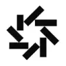

МолекулаАгрегаторы нейросетей
Молекула объединяет модели для текстов, изображений, видео и музыки. В одном аккаунте можно подобрать инструмент под этап работы, сохранить инструкции проекта и использовать готовые роли.
К задаче в МолекулеАссистенты для кода: Сравните объём доступного контекста и контроль изменений. Для теста выберите небольшую задачу с понятным результатом и существующими проверкам
Пришлите небольшой фрагмент программы вместе с сообщением об ошибке и ожидаемым поведением. Молекула поможет объяснить причину и предложить локальную правку; применяйте изменение после проверки на своих примерах, сохранив исходную версию файла.
Вот функция обработки дат и текст ошибки. На этом входном значении она падает. Объясни причину, предложи минимальное изменение и перечисли случаи, которыми следует проверить исправление.

Молекула объединяет модели для текстов, изображений, видео и музыки. В одном аккаунте можно подобрать инструмент под этап работы, сохранить инструкции проекта и использовать готовые роли.
К задаче в Молекуле
В инструменте «Novamira» можно писать и изменять программный код. Ещё одно направление работы: собирать рабочие инструменты и операции с данными.

AskCodi помогает разбирать и подготавливать программные фрагменты. Задание стоит формулировать через нужное поведение кода, а не через просьбу просто написать решение.

В инструменте «Mistral AI» можно связывать действия в автоматизированный процесс. Ещё одно направление работы: готовить текст по теме и требованиям к содержанию.

OpenCode рассчитан на задачи, где нужно писать и изменять программный код. Ещё одно направление работы: исследовать устройство программного проекта.

Hermes Agent предназначен для агентной работы с инструментами и контекстом задачи. Перед запуском нужно определить разрешённые операции и способ проверки промежуточного результата.

Replit представляет собой браузерную среду для разработки программ с ИИ-инструментами. Участники могут совместно редактировать код, использовать готовые шаблоны и материалы для обучения. Кроме работы над проектом, среда предусматривает его развёртывание и размещение, объединяя написание программы с подготовкой к запуску.

Workik AI рассчитан на задачи, где нужно связывать действия в автоматизированный процесс. Ещё одно направление работы: исследовать тему и разбирать найденную информацию.

Kiro используют для задачи: писать и изменять программный код. Ещё одно направление работы: связывать действия в автоматизированный процесс.

TRAE относится к инструментам, которые помогают писать и изменять программный код. Ещё одно направление работы: исследовать устройство программного проекта.

Devin выполняет задачи разработки в рабочем окружении: изучает проект, меняет код и запускает проверки. Результат можно оценивать по подготовленным изменениям и журналу действий.

Freestyle используют для задачи: связывать действия в автоматизированный процесс. Ещё одно направление работы: писать и изменять программный код.

Qwen Chat позволяет обсуждать задачи и готовить тексты с моделями Qwen. Веб-чат, отдельное API и локальный запуск имеют разные условия и возможности доступа.

Windsurf использует Cascade для обсуждения кода и изменения проекта. Режимы Chat и Code позволяют разделить исследование ошибки и подготовку правок, сохраняя контроль над командами и файлами.

Daytona относится к инструментам, которые помогают писать и изменять программный код.
GitHub Copilot добавляет подсказки и работу с ИИ в инструменты разработки. Помощнику можно передать контекст репозитория, обсудить функцию и подготовить изменение для последующей проверки.

В инструменте «Google Jules» можно связывать действия в автоматизированный процесс. Ещё одно направление работы: писать и изменять программный код.

Novita AI относится к инструментам, которые помогают писать и изменять программный код. Ещё одно направление работы: связывать действия в автоматизированный процесс.

Together AI предоставляет разработчику доступ к моделям и средствам их применения. Способ подключения выбирают под требуемый формат генерации и рабочую нагрузку.
Goose рассчитан на задачи, где нужно связывать действия в автоматизированный процесс. Ещё одно направление работы: писать и изменять программный код.

Kilo Code используют для задачи: писать и изменять программный код. Ещё одно направление работы: связывать действия в автоматизированный процесс.

В инструменте «Keras» можно писать и изменять программный код. Ещё одно направление работы: получать изображения из словесного задания.
Warp рассчитан на задачи, где нужно связывать действия в автоматизированный процесс. Ещё одно направление работы: выполнять задачи с веб-страницами.
Aider добавляет диалог с моделью к работе в терминале и Git-проекте. Изменения следует оценивать через diff и существующие проверки репозитория.
В инструменте «Verdent AI» можно писать и изменять программный код. Ещё одно направление работы: исследовать устройство программного проекта.
Blackbox AI предлагает разные способы получать помощь с кодом: в среде разработки, терминале и через подключаемые инструменты. Выбор способа зависит от контекста проекта.

Claude Code читает файлы проекта, предлагает изменения и выполняет команды в предоставленной среде. Рабочий процесс включает постановку задачи, просмотр патча и проверку поведения программы.

LM Studio даёт графический интерфейс для загрузки и запуска локальных моделей, работы с документами и настройки сервера. Подходит для сравнения моделей в управляемом окружении.

Tabnine добавляет подсказки модели к программированию. Настройки размещения и обработки кода нужно выбирать с учётом требований проекта к данным.

Cline работает с файлами, терминалом и инструментами в среде разработки. Режимы планирования и выполнения помогают сначала согласовать задачу, затем контролировать правки агента.

Cursor помогает разбирать репозиторий и менять связанные файлы через ИИ-агента в редакторе. Правила проекта и контекст текущей задачи направляют работу помощника; результат проверяют по готовому патчу.

OpenHands предлагает агентную работу с программными задачами. Доступ к проекту и инструментам нужно ограничить так, чтобы действия можно было проверить и повторить.
Страница 1 из 1
Помощнику для кода важно понимать окружающие файлы и соглашения команды. В небольшом скрипте достаточно одной функции, а в приложении ошибка может находиться между интерфейсом и обработчиком запроса. Сначала определите, какие материалы нужны для вашей обычной задачи и как они попадают в контекст.
Cursor и Windsurf предлагают работу с агентом рядом с проектом. GitHub Copilot стоит сравнить, если команда пользуется поддерживаемой IDE. Проверяйте выбранный способ доступа, а не только знакомое название продукта.
Подготовьте небольшой дефект, который уже воспроизводится. Например, пустой поиск вызывает ошибку сервера, а обычный запрос возвращает результаты. Приложите исходные условия и ожидаемое поведение. Попросите найти причину без изменения зависимостей и сохранить нынешний формат ответа API.
До правки посмотрите объяснение помощника. Он должен найти действующий обработчик и понять путь данных. Если результат относится к старому компоненту, уточните точку входа. Объём предложенного кода не показывает пользу: локальное исправление бывает удобнее нового слоя, который потребуется поддерживать.
Для проверки возьмите пустую строку, строку из пробелов и обычный запрос. Убедитесь, что условия продукта действительно требуют одинакового поведения первых двух случаев. Так сравнение опирается на задачу, а не на предположения модели.
Прочитайте diff и запустите относящиеся к сценарию проверки. Посмотрите, не были ли удалены условия или тесты. В интерфейсной задаче пройдите путь пользователя отдельно: успешная сборка не сообщает, что сообщение об ошибке стало понятным.
Учитывайте права на терминал и внешние подключения. Выбор модели и маршрут передачи кода должны соответствовать правилам команды. Для более активных действий сравните также категорию ИИ-агентов. Критерий готовности задавайте через изменённое поведение и подтверждённые проверки.